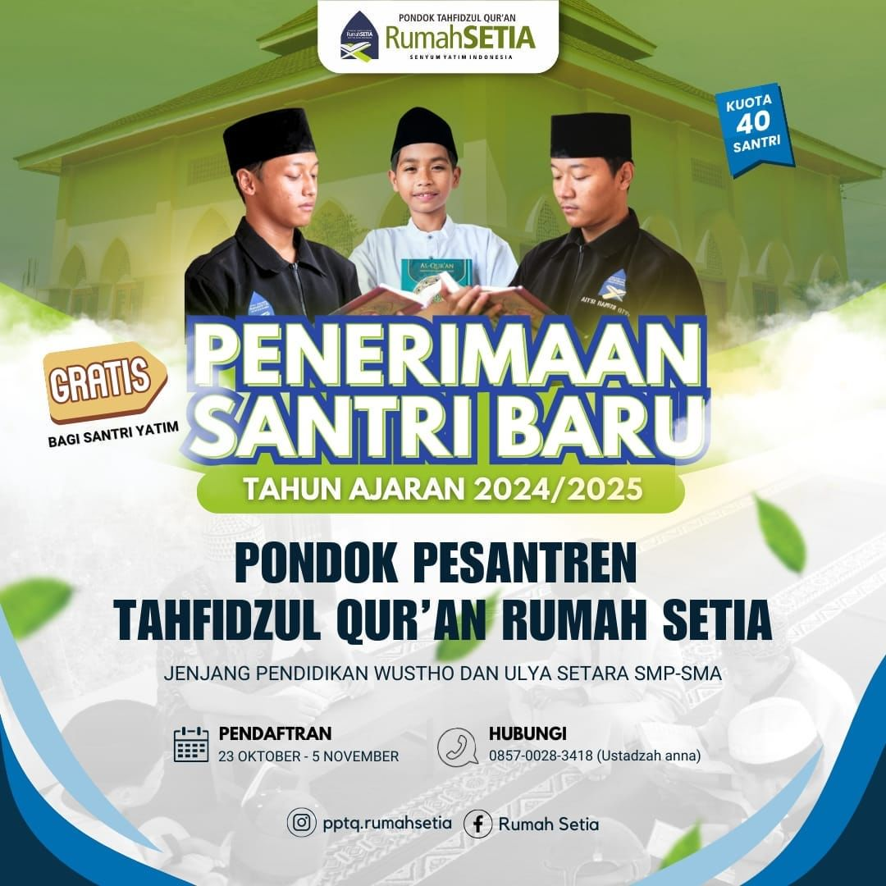

Bismillahirrahmanirrahim
Alhamdulillah, segala puji hanya milik Alloh Rabb semesta Alam. Shalawat dan salam senantiasa tercurah kepada Nabi Muhammad Shallallohu 'alaihi wa sallam, kepada keluarga, para sahabat dan siapa saja yang mengikuti jejak mereka hingga akhir jaman. Selamat datang di situs penerimaan santri baru Pondok tahfidzul quran Rumah SETIA,Tahun Pelajaran: 2024-2025 M / 1445-1446 H Kualitas sebagian generasi muda Islam semakin memprihatinkan. Kemaksiatan, kebodohan terhadap agama, dan membeo kepada budaya barat menjadi ciri kehidupan mereka. Peran lembaga pendidikanpun seakan mandul untuk membentuk generasi beriman dan bertakwa. Alhamdulillah, Pondok Pesantren Islam Rumah SETIA di bawah yayasan Ar-Risalah bertekad untuk tetap berusaha menjalankan proses pendidikan integral membentuk pribadi cerdas secara spiritual, emosional dan intelektual. Semoga melalui lembaga ini Allah memberikan hidayah dan taufiq-Nya kepada para penuntut ilmu dan menjadikan mereka seorang 'alim muttaqi yang berperan aktif dalam amal Iqomatuddin.
Pondok Pesantren Rumah SETIA adalah Lembaga Pendidikan Swasta yang memiliki sistem pendidikan integral dan terpadu.
Diasuh oleh tenaga pendidik yang memiliki dedikasi dan komitmen tinggi terhadap pendidikan Islam.
,Jl.Parikesit, Rt.04 Rw 01, Pucangan, Kartasura, Sukoharjo
Jl.Papagan, No 104, Rt 02 Rw 05, Makamhaji, Kartasura, Sukoharjo.